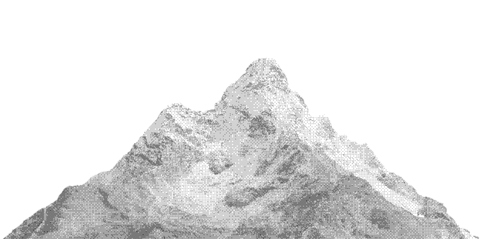
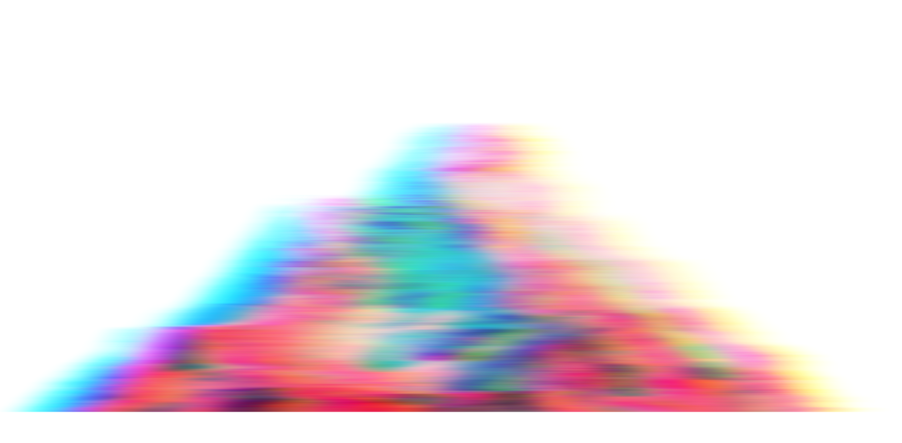
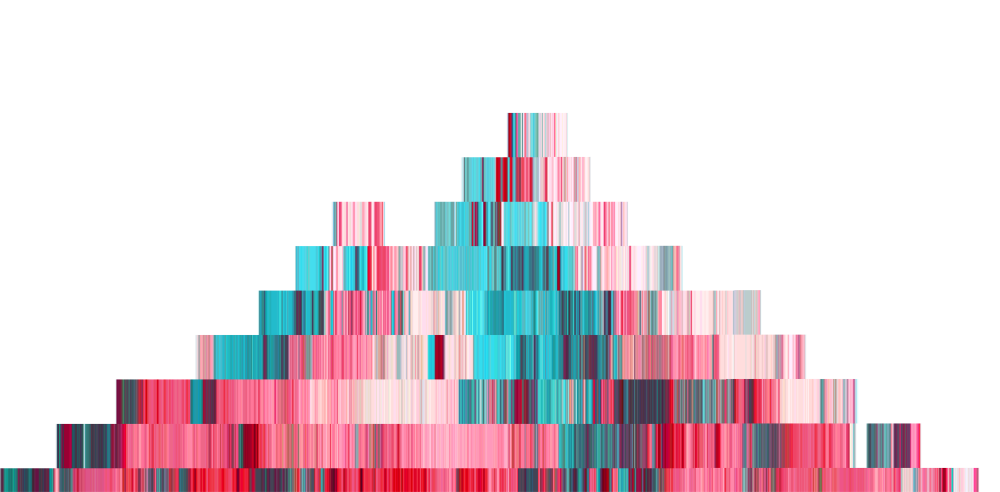
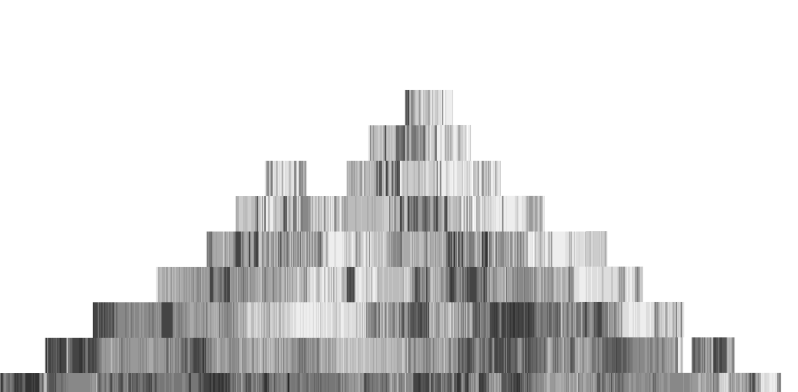
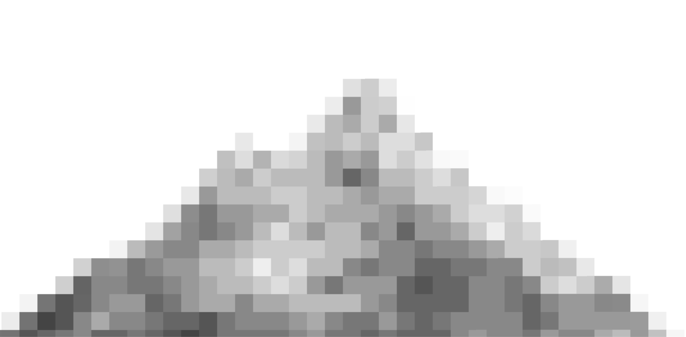
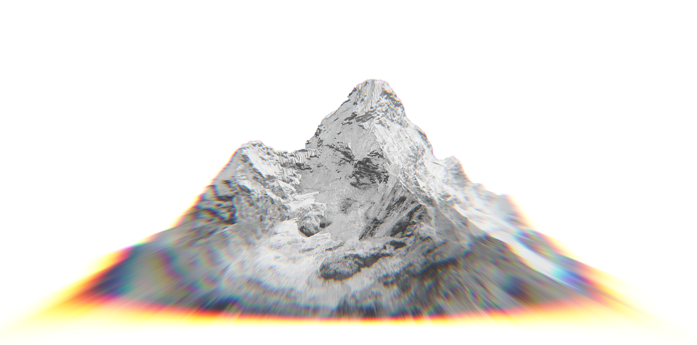
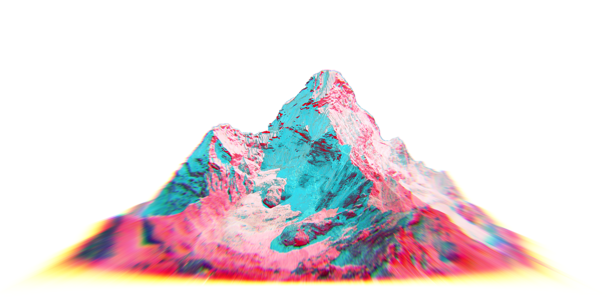
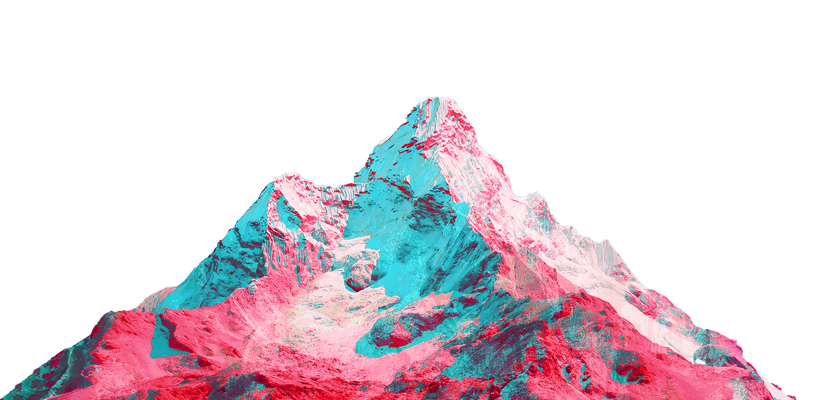

[ 00 — AUDIT ]
Five good elements, no order.
Each element works on its own. Together they compete, because nothing says which one leads. This is what the homepage does today.
Mountain
Now Carries the hero. The strongest image you have.
Clash Ten treatments sit in the hero switcher, and three different mountains share one page: the colour Everest, the line peak behind the manifesto, the grain massif in the footer.
Squares
Now Everywhere: hero dither, slope scene, customers field, traffic bars, test matrix.
Clash Cell sizes run from about 4 to 8 px, across three dither matrices (4 × 4, 8 × 8, 16 × 16). They read as texture, not as one idea.
Lines
Now Only the graph over the hero and the manifesto.
Clash Nothing else uses them. The lift cable and the scanline plates are level lines, which the brief rules out.
Skier sprites
Now Skiers, chairlift riders and a pine forest fill the agent-interface stage.
Clash A literal resort scene, the loudest thing after the hero. The lift and lodge pictures in the readiness rows repeat it.
Colour and type
Now The palette and the three typefaces are solid.
Clash 68 colour values in the homepage CSS are not in the palette. Body copy switches between Inter and Mozilla Text. Sign up is white on berry at 12 px, a contrast of 3.42:1.
Ten heroes in one switcher

Dither Photo
Photo
Iridescent
Scanline
Lines
Blocks Pixels
Pixels
Glitch
Anaglyph
Live
Colours on the homepage that are not in the palette 12 of 68
- #000000
- #EFEFEF
- #F8F8F8
- #D2D2D2
- #919191
- #DDDDDD
- #CBD4D3
- #576B63
- #69BFBB
- #0B1C1B
- #E72E66
- #C5DDD9
Proposed hierarchy
HERO
The square
The one idea. Everything else is made of it or revealed by it. One reveal per view.
SUBJECT
The mountain
What the squares reveal most often. A recipe that fits any peak, not one fixed illustration.
SUPPORT
Tracks and type
Irregular diagonals that run from square to square. Three typefaces, one job each.
ACCENT
Berry, the arrow, one skier
Small doses. One berry phrase, one ↗, at most one sprite per view.